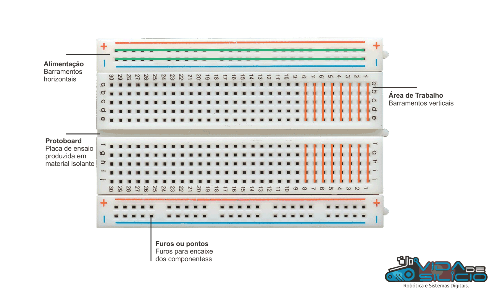
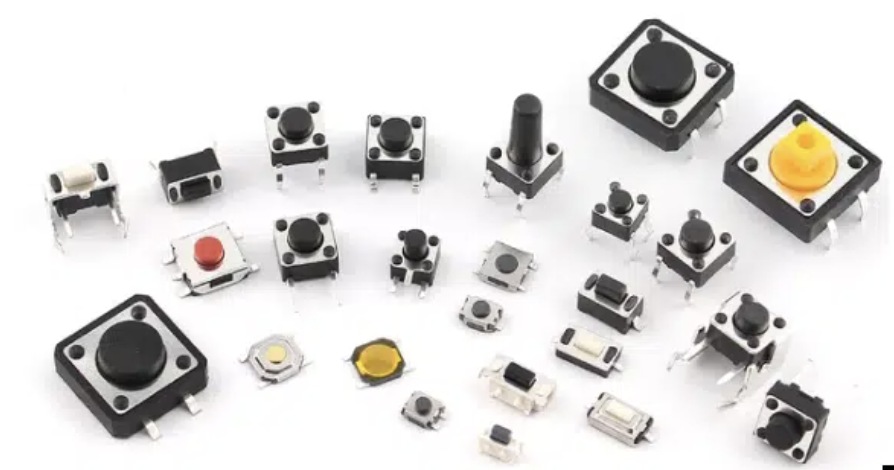
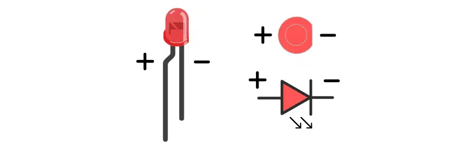

Eletronica básica
Introdução à Eletricidade Básica¶
A eletrônica é o ramo da física que estuda o fluxo de elétrons em materiais semicondutores, condutores e isolantes. Compreender os conceitos fundamentais de eletricidade é essencial para o desenvolvimento de circuitos e sistemas eletrônicos.
Conceitos Fundamentais¶
- Carga Elétrica ( Q ): Propriedade das partículas que determina as interações eletromagnéticas. Medida em coulombs (C).
- Corrente Elétrica ( I ): Fluxo de cargas elétricas através de um condutor. Medida em amperes (A).
$$ I = \frac{dQ}{dt} $$
- Tensão Elétrica (Diferença de Potencial, V ): Energia potencial elétrica por unidade de carga. Medida em volts (V).
- Resistência Elétrica ( R ): Oposição ao fluxo de corrente em um material. Medida em ohms (Ω).
Lei de Ohm¶
A relação entre tensão, corrente e resistência é dada pela Lei de Ohm:
$$ V = R \times I $$
Onde:
- V : Tensão em volts (V)
- I : Corrente em amperes (A)
- R : Resistência em ohms (Ω)
Simuladores Eletrônicos¶
Os simuladores eletrônicos são ferramentas essenciais para projetar, testar e validar circuitos antes da montagem física. Eles permitem economizar tempo e recursos, identificando possíveis problemas antecipadamente.
Principais Simuladores¶
- Wokwi: Simulador online gratuito que permite simular microcontroladores como Arduino, ESP32 e Raspberry Pi Pico, além de diversos componentes eletrônicos.
- SimulIDE: Simulador offline em tempo real para eletrônica, microcontroladores e Arduino. É uma ferramenta leve que oferece simulação de circuitos analógicos e digitais.
-
SPICE (Simulation Program with Integrated Circuit Emphasis): Um padrão da indústria para simulação de circuitos analógicos e digitais.
-
LTspice: Gratuito, oferecido pela Analog Devices. Download LTspice
-
Proteus: Software que combina simulação de circuitos com simulação de microcontroladores.
- Tinkercad Circuits: Simulador online gratuito, ideal para iniciantes.
Vantagens do Uso de Simuladores¶
- Economia de Recursos: Evita desperdício de componentes e materiais.
- Segurança: Permite testar circuitos sem risco de danos físicos.
- Análise Detalhada: Possibilidade de visualizar formas de onda, correntes e tensões em diferentes pontos do circuito.
- Iteração Rápida: Facilita modificações e otimizações no projeto.
Protoboard¶

A protoboard é uma plataforma de prototipagem sem solda utilizada em eletrônica para montar circuitos temporários e testar configurações antes da implementação final. Sua estrutura interna é composta por trilhas condutoras de metal organizadas em linhas e colunas, permitindo conexões rápidas e reconfiguráveis entre componentes.
Estrutura Interna¶

- Barramentos de Alimentação: Localizados nas extremidades da protoboard, esses barramentos são utilizados para distribuir as tensões de alimentação e terra (GND) ao longo da placa. É comum que sejam separados no meio, exigindo pontes de conexão para continuidade elétrica.
- Áreas de Conexão: No centro, a protoboard possui grupos de cinco furos conectados eletricamente em colunas, permitindo a inserção de terminais de componentes e jumpers para interligação.
Boas Práticas de Utilização¶
- Organização dos Componentes: Posicione os componentes de maneira lógica para minimizar o comprimento dos jumpers e reduzir interferências eletromagnéticas. Componentes similares devem ser agrupados para facilitar a análise do circuito.
- Integridade das Conexões: Utilize jumpers de qualidade e evite a inserção excessiva de componentes nos mesmos pontos para prevenir desgaste dos contatos internos, que pode levar a mau funcionamento devido a conexões intermitentes.
- Desacoplamento de Alimentação: Em circuitos com componentes sensíveis ou de alta velocidade, adicione capacitores de desacoplamento próximos aos pinos de alimentação dos CI's para reduzir ruídos e instabilidades causadas por flutuações na tensão de alimentação.
- Limitações: Evite utilizar a protoboard para circuitos de alta frequência ou correntes elevadas, pois a indutância e capacitância parasitas podem afetar o desempenho do circuito.
Tip
Para um guia detalhado sobre a utilização eficiente da protoboard, consulte: https://portal.vidadesilicio.com.br/protoboard/
Chaves e Botões¶

Chaves e botões são componentes eletromecânicos utilizados para controlar o fluxo de corrente em um circuito, funcionando como dispositivos de entrada em sistemas digitais.
Considerações Técnicas¶
- Tipos de Chaves: Existem diversos tipos, como SPST (Single Pole Single Throw), SPDT (Single Pole Double Throw), DPDT (Double Pole Double Throw), cada um adequado para aplicações específicas conforme a necessidade de contatos e configurações de circuito.
- Debouncing: Devido às características mecânicas, ao acionar uma chave ou botão, podem ocorrer múltiplos contatos rápidos (bounce), gerando ruídos no sinal. É importante implementar técnicas de debouncing, seja por hardware (capacitores, resistores) ou software (algoritmos de filtragem), para garantir a estabilidade do sinal de entrada.
- Pull-up e Pull-down Resistores: Utilizados para definir um nível lógico definido quando a chave está aberta, prevenindo estados flutuantes que podem causar comportamento indeterminado no circuito digital.
Tip
Para aprofundar-se no tema de chaves e botões, acesse: https://www.robocore.net/tutoriais/introducao-a-chaves-e-botoes
LEDs¶

Os LEDs (Light Emitting Diodes) são dispositivos semicondutores que emitem luz quando polarizados diretamente. São utilizados nas mais diversas aplicações do nosso dia-a-dia como indicadores luminosos em circuitos eletrônicos.
Características e Utilização¶
- Polaridade: LEDs possuem anodo (+) e catodo (-). A corrente deve fluir do anodo para o catodo; a inversão de polaridade impede a condução e pode danificar o componente.
- Tensão e Corrente: Cada LED possui uma tensão direta ($ V_{\text{LED}} ) específica, geralmente entre 1,8V e 3,3V, e uma corrente nominal ( I_{\text{LED}} $), tipicamente 10mA a 20mA.
Cálculo do Resistor Limitador¶
Para limitar a corrente e proteger o LED, calcula-se o resistor em série:
$$ R = \frac{V_{fonte} - V_{LED}}{I_{LED}} $$
Onde:
- $ V_{\text{fonte}} $: Tensão da fonte de alimentação.
- $ V_{\text{LED}} $: Queda de tensão no LED.
- $ I_{\text{LED}} $: Corrente desejada através do LED.
Exemplo: Para um LED com $ V_{\text{LED}} = 2V $ alimentado por uma fonte de 5V e corrente de 15mA:
$$ R = \frac{5V - 2V}{15mA} = 200 \Omega $$
Nesse caso o valor comercial é $R = 220 \Omega $.
Aplicações Avançadas¶
- Controle por PWM: A modulação por largura de pulso permite controlar a intensidade luminosa do LED, variando o ciclo de trabalho do sinal de controle.
- Multiplexação: Em sistemas com múltiplos LEDs, a multiplexação permite controlar vários LEDs com menos pinos do microcontrolador, acionando-os em sequências rápidas para criar a ilusão de iluminação contínua.
- Matrizes de LEDs: Utilizadas em displays e painéis, exigem técnicas específicas de controle, como varredura de linhas e colunas, e cuidados com corrente total e dissipação de calor.
Tip
Para mais detalhes sobre LEDs e circuitos associados, visite: https://www.makerhero.com/blog/aprenda-a-piscar-um-led-com-arduino/
Sensores e Atuadores¶
Os sensores são dispositivos que detectam eventos ou mudanças no ambiente físico e fornecem uma saída correspondente, geralmente sob a forma de um sinal elétrico. Atuadores convertem sinais elétricos em ação física, permitindo ao sistema interagir com o ambiente.
Sensores¶
- Tipos Comuns:
- Temperatura: Termistores, termopares, sensores digitais (DS18B20).
- Luminosidade: Fotoresistores (LDR), fotodiodos, fototransistores.
- Umidade: Sensores capacitivos e resistivos.
- Pressão: Sensores piezorresistivos, piezoelétricos.
Atuadores¶
- Tipos Comuns:
- Motores DC: Conversão de energia elétrica em movimento rotacional; requerem circuitos de controle como pontes H para reversão de sentido.
- Servomotores: Oferecem controle preciso de posição angular; controlados via sinal PWM específico.
- Relés: Permitem o acionamento de cargas de alta potência isolando o circuito de controle.
- Buzzer: Dispositivos piezoelétricos utilizados para gerar som; podem ser controlados por sinais digitais ou analógicos.